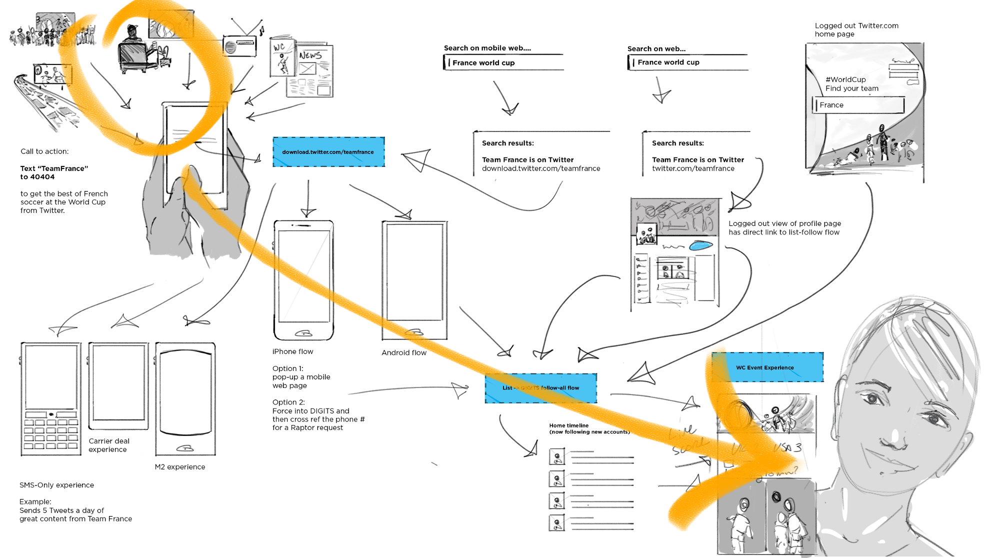
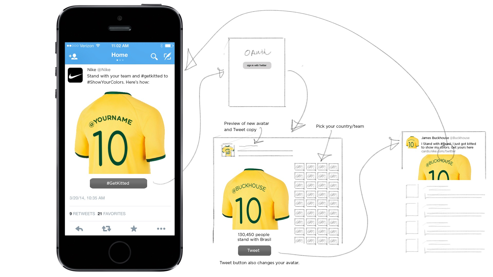
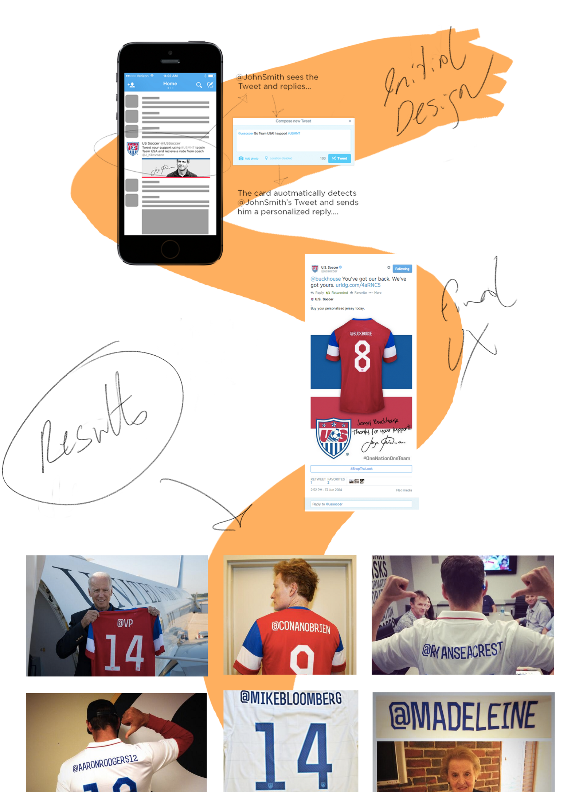

Twitter was backed into a corner. Facebook
was poised to dominate the World Cup through it's massive user base. Twitter fought back with innovation,
creativity and an orchestrated suite of products to capture the moment. Here's how we did it.
The suite of products was designed to help people find a rich and lively community of fans, celebrities, and enthusiasts. Global carriers lined up to share a country-specific experience of the World Cup on Twitter. Once on the platform, fans could vote for the Man of the Match with one tap or buy a custom kit with their @handle on the back, all from inside a Tweet. Our heavy use of team pages and team lists compelled soccer legends to join the platform. And in a surprise guerrilla attack, data demigod, Simon Rogers, and I teamed up to invent an instant analytics and storytelling tool for journalists covering the games, called Twitter Reverb. We used the tool to steal minute after minute of invaluable TV air time during the halftime reports, as the on-air hosts used our product to give instant, social analysis.
The suite of products was designed to help people find a rich and lively community of fans, celebrities, and enthusiasts. Global carriers lined up to share a country-specific experience of the World Cup on Twitter. Once on the platform, fans could vote for the Man of the Match with one tap or buy a custom kit with their @handle on the back, all from inside a Tweet. Our heavy use of team pages and team lists compelled soccer legends to join the platform. And in a surprise guerrilla attack, data demigod, Simon Rogers, and I teamed up to invent an instant analytics and storytelling tool for journalists covering the games, called Twitter Reverb. We used the tool to steal minute after minute of invaluable TV air time during the halftime reports, as the on-air hosts used our product to give instant, social analysis.
ROLE
Experience Architect
PRODUCTS
Text-to-Join, Man of the Match, Perosnalized Kit + Buy Button, Twitter Reverb
RESULTS
New users, new revenue, new partnerships with carriers in global markets,
increased platform adoption by the teams and players, increased user engagement, free on-air product placement at
halftime from hosts using Twittter Reverb to recap the game.


| - | |
- |
| - | |
- |